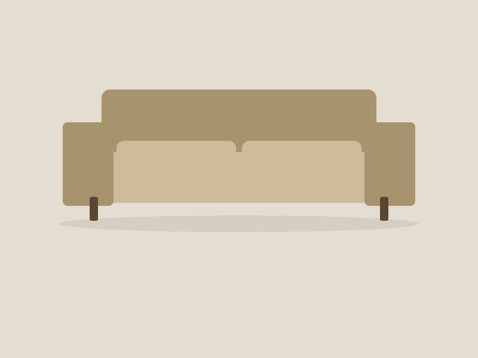

Sofa
Fjord 3-Seater Sofa
€1,890.00
Item no. NH-1001
A relaxed three-seater with deep seats and soft rounded arms. The warm oat fabric fits modern and classic living rooms alike.
Dimensions
- Width: 228 cm
- Depth: 98 cm
- Height: 78 cm
- Seat height: 44 cm
- Seat depth: 60 cm
Material & Construction
- Frame: solid beech wood
- Suspension: sinuous springs
- Cushions: cold foam with fibre wrap
- Upholstery: 100% polyester bouclé, oat
- Legs: oiled oak
Features & Feel
- Soft, sink-in comfort
- Bouclé with a slightly nubby texture
- Loose back cushions
- Cleaning code: S